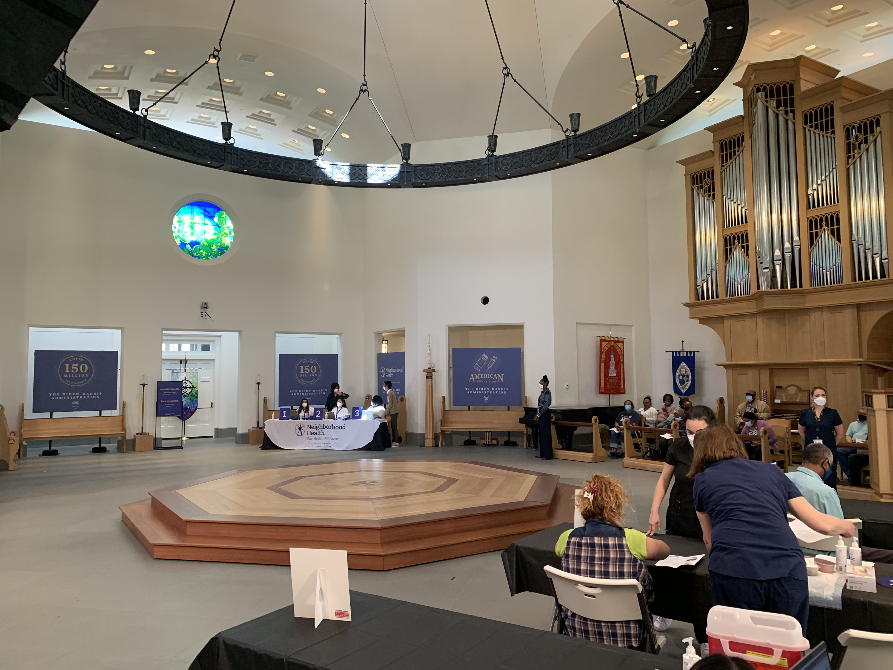

Pool was led into the Immanuel Chapel where people were receiving vaccines, three at a time, at three long tables set up on the right side of the room. People were seated and socially distanced in chairs surrounding the center altar (pics attached).
POTUS has not been led into the chapel yet. Some background on who will greet him, per WH:
Upon arrival, POTUS will greet with the following:
- Dr. Basim Khan, Executive Director of Neighborhood Health
- Dean Ian Markham, Dean of Virginia Theological Seminary
- Dr. Marty Burnett, Acting Associate Dean of Chapel at Virginia Theological Seminary and Associate Professor of Church Music and Director of Chapel Music
- Reverend Craig Harcum, Macedonia Baptist Church
- Reverend Dr. Howard-John Wesley, Alfred Street Baptist Church
- Lolita Youmans, Administrator at Alfred Street Baptist Church

Courtney Subramanian
White House correspondent
USA TODAY
▊▊▊▊▊▊▊▊▊▊
@cmsub